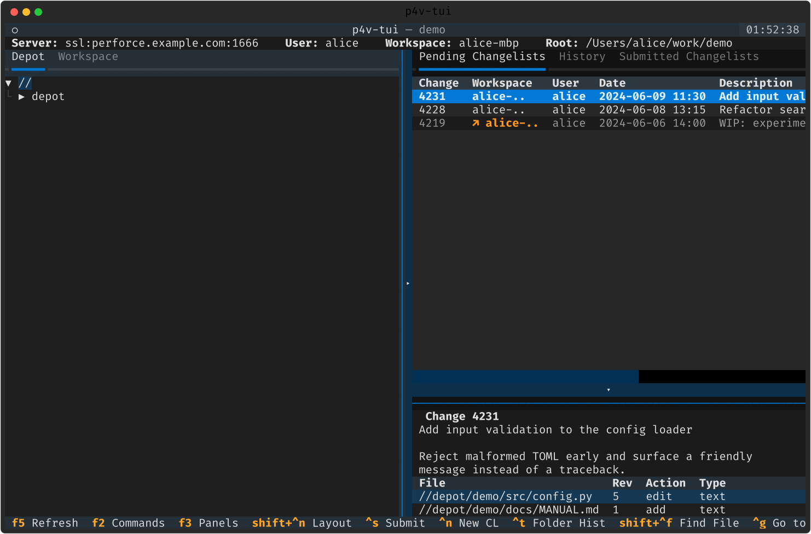

시작 · 핵심 개념
본격적으로 다루기 전에, p4v-tui 가 무엇이고 어떤 문제를 푸는지, 화면이 어떻게 생겼는지 큰 그림을 먼저 봅니다.
p4v-tui 는 무엇인가
p4v-tui 는 Textual 로 만든 키보드 우선 Perforce/Helix 터미널 UI 입니다. p4v(GUI)의 일상 개발 흐름 — get · edit · add · delete · revert · reconcile · resolve · submit · diff · history — 을 터미널 안에서 그대로 다룹니다.
하지만 진짜 목적은 따로 있습니다. p4v 는 긴 호출 하나를 붙잡고 있다가 링크가 끊기면 통째로 다시 시작하게 만듭니다. p4v-tui 는 느리거나 불안정한 네트워크에서 버티도록 다시 지어졌습니다. 모든 긴 작업을 작은 청크로 쪼개 진행 상태를 디스크에 남기고, 끊기면 자동으로 재연결하며, 중간에 꺼도 다음 실행이 멈춘 지점부터 이어집니다.

화면 구성
- 왼쪽 — 트리: Workspace(내 클라이언트 루트)와 Depot(디팟 네임스페이스) 탭. 파일마다 한 글자 상태 마커가 붙습니다.
- 오른쪽 — 표: Pending(미제출 CL, 크로스 워크스페이스) · Submitted · History 탭. 아래는 선택한 CL/파일의 상세 패널.
- 하단 — 로그: 모든 p4 호출·청크 작업·오류가 타임스탬프와 함께 쌓입니다. p4v 의 한 줄 상태 바를 대체합니다.
- 상단 — ConnectionBar: 서버·사용자·워크스페이스·루트 + 진행 스피너·재연결 배너.
- 맨 아래 — 푸터: 현재 맥락에서 쓸 수 있는 단축키 힌트.
p4v 와의 위치
p4v-tui 는 p4v 를 통째로 복제하지 않습니다. 일상 개발 표면을 덮고 그 위에 회복력 계층을 얹는 데 집중합니다. 관리·스펙 편집 성격의 화면(워크스페이스/브랜치 매핑 편집, 스트림, Users/Groups/Protect, Triggers, Jobs)은 표준 p4 CLI 에 맡깁니다.
인증도 일부러 앱 밖입니다 — 로그인/티켓/SSO 화면이 없습니다. p4 login / p4 logout 로 처리하고, 보안 경계를 한 곳(CLI)에 남깁니다.
| 표기 | 뜻 |
|---|---|
| ✅ | 구현됨 (p4v 대응 기능) |
| ➕ | TUI 전용 — p4v 가 못 하는 것 |
| ⏭ | 범위 밖 — p4 CLI 에 위임 |